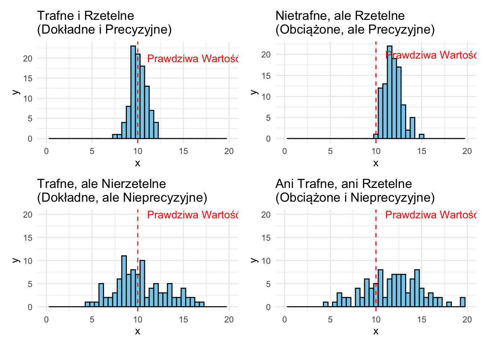
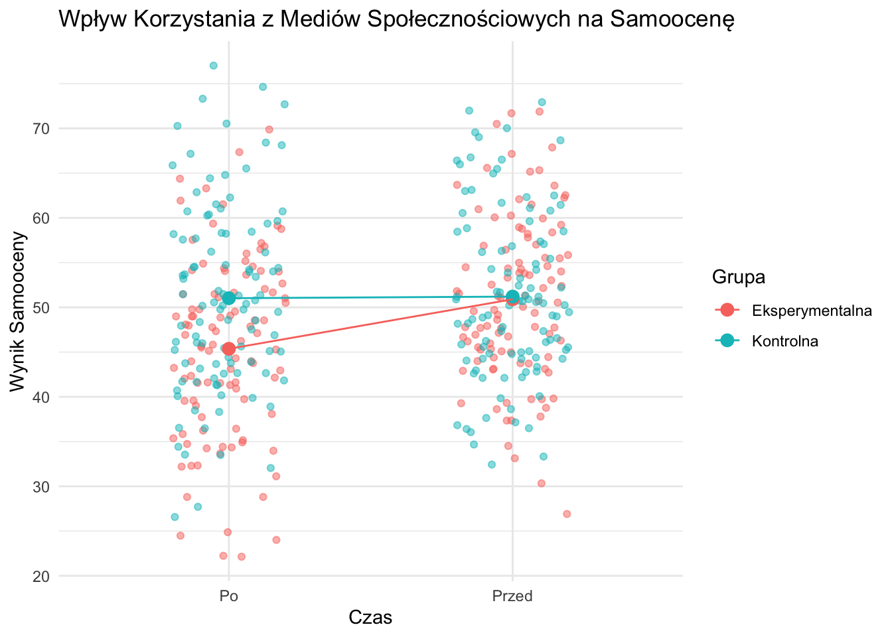
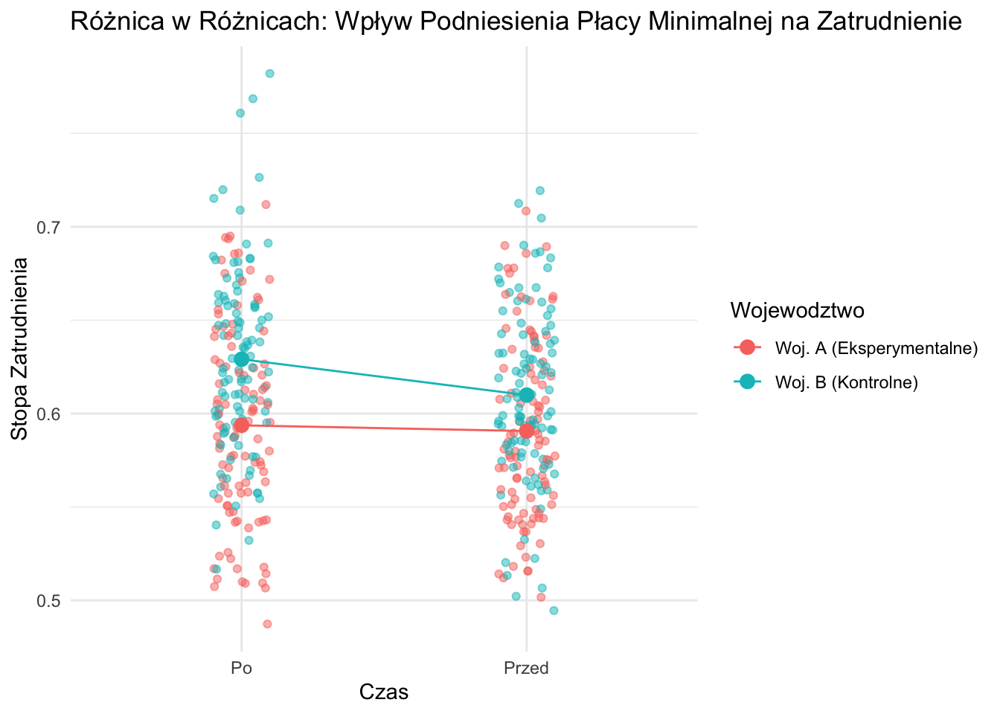

10Trafność, Rzetelność i Typy Badań w Naukach Społecznych
10.1 Wprowadzenie do Trafności, Rzetelności i Powiązanych Pojęć
Przed zagłębieniem się w konkretne typy badań, kluczowe jest zrozumienie fundamentalnych pojęć, które stanowią podstawę rzetelnych badań naukowych. Ta sekcja omówi trafność, rzetelność, błąd systematyczny, wariancję, dokładność i precyzję.
10.1.1 Trafność
Trafność odnosi się do stopnia, w jakim pomiar lub badanie dokładnie odzwierciedla lub ocenia konkretną koncepcję, którą badacz próbuje zmierzyć.
Typy Trafności:
Trafność Wewnętrzna: Stopień, w jakim badanie ustanawia związek przyczynowy między zmiennymi niezależnymi a zależnymi.
Trafność Zewnętrzna: Stopień, w jakim wyniki badania można uogólnić na inne sytuacje i inne osoby.
Trafność Konstruktu: Stopień, w jakim test mierzy pojęcie lub konstrukt, który ma mierzyć.
Trafność Treściowa: Stopień, w jakim pomiar reprezentuje wszystkie aspekty danego konstruktu.
10.1.2 Rzetelność
Rzetelność odnosi się do spójności pomiaru. Pomiar jest uważany za rzetelny, jeśli daje podobne wyniki w spójnych warunkach.
Typy Rzetelności:
Rzetelność Test-Retest: Stopień, w jakim wyniki testu są spójne między jednym a drugim podejściem do testu.
Rzetelność Międzyoceniająca: Stopień zgodności między oceniającymi.
Spójność Wewnętrzna: Spójność wyników między pozycjami w ramach testu.
10.1.3 Błąd Systematyczny, Wariancja, Dokładność i Precyzja: Związek z Trafnością i Rzetelnością
Te pojęcia są często używane w dyskusjach o pomiarze i projektowaniu badań i mają ważne związki z trafnością i rzetelnością:
Błąd Systematyczny: Systematyczny błąd prowadzący do odchylenia od prawdziwej wartości. Jest ściśle związany z trafnością, szczególnie trafnością konstruktu.
Wariancja: Rozrzut punktów danych wokół średniej. Wariancja jest związana z rzetelnością; wysoka wariancja w powtarzanych pomiarach sugeruje niską rzetelność.
Dokładność: Bliskość zmierzonej wartości do rzeczywistej wartości. Jest ściśle powiązana z trafnością.
Precyzja: Bliskość dwóch lub więcej pomiarów względem siebie. Precyzja jest związana z rzetelnością.
Zobrazujmy te pojęcia za pomocą R:
library(ggplot2)library(patchwork)# Funkcja do generowania danychgeneruj_dane <-function(n, prawdziwa_srednia, blad, sd) { dane <-rnorm(n, mean = prawdziwa_srednia + blad, sd = sd)return(dane)}# Generowanie zbiorów danychset.seed(123)dokladne_precyzyjne <-generuj_dane(100, 10, 0, 1)obciazene_precyzyjne <-generuj_dane(100, 10, 2, 1)dokladne_nieprecyzyjne <-generuj_dane(100, 10, 0, 3)obciazene_nieprecyzyjne <-generuj_dane(100, 10, 2, 3)# Tworzenie wykresówrysuj_wykres <-function(dane, tytul) {ggplot(data.frame(x = dane), aes(x = x)) +geom_histogram(binwidth =0.5, fill ="skyblue", color ="black") +geom_vline(xintercept =10, color ="red", linetype ="dashed") +xlim(0, 20) +ggtitle(tytul) +theme_minimal() +annotate("text", x =10, y =20, label ="Prawdziwa Wartość", color ="red", hjust =-0.1)}p1 <-rysuj_wykres(dokladne_precyzyjne, "Trafne i Rzetelne\n(Dokładne i Precyzyjne)")p2 <-rysuj_wykres(obciazene_precyzyjne, "Nietrafne, ale Rzetelne\n(Obciążone, ale Precyzyjne)")p3 <-rysuj_wykres(dokladne_nieprecyzyjne, "Trafne, ale Nierzetelne\n(Dokładne, ale Nieprecyzyjne)")p4 <-rysuj_wykres(obciazene_nieprecyzyjne, "Ani Trafne, ani Rzetelne\n(Obciążone i Nieprecyzyjne)")# Łączenie wykresów(p1 + p2) / (p3 + p4)

Figure 10.1: Ilustracja trafności i rzetelności
Powyższy wykres ilustruje różne kombinacje trafności (dokładności) i rzetelności (precyzji). Czerwona przerywana linia reprezentuje prawdziwą wartość.
10.2 Typy Badań w Naukach Społecznych
W naukach społecznych badacze wykorzystują różne projekty badań do badania zjawisk, testowania hipotez i wyciągania wniosków. Ten rozdział omówi trzy główne kategorie typów badań:
Badania Eksperymentalne
Badania Nieeksperymentalne: Badania Obserwacyjne
Badania Quasi-eksperymentalne
10.2.1 Badania Eksperymentalne
Kluczowe cechy badań eksperymentalnych:
Losowy przydział uczestników do grup
Manipulacja zmienną(ymi) niezależną(ymi)
Kontrola zmiennych zakłócających
10.2.1.1 Przykład: Wpływ Korzystania z Mediów Społecznościowych na Samoocenę
Pytanie Badawcze: Czy zwiększone korzystanie z mediów społecznościowych prowadzi do niższej samooceny u nastolatków?
# Generowanie przykładowych danychset.seed(123)n <-100przed_eksperymentalna <-rnorm(n, mean =50, sd =10)po_eksperymentalna <- przed_eksperymentalna +rnorm(n, mean =-5, sd =5)przed_kontrolna <-rnorm(n, mean =50, sd =10)po_kontrolna <- przed_kontrolna +rnorm(n, mean =0, sd =5)dane <-data.frame(Grupa =rep(c("Eksperymentalna", "Kontrolna"), each = n*2),Czas =rep(rep(c("Przed", "Po"), each = n), 2),Wynik =c(przed_eksperymentalna, po_eksperymentalna, przed_kontrolna, po_kontrolna))# Tworzenie wykresuggplot(dane, aes(x = Czas, y = Wynik, color = Grupa, group = Grupa)) +geom_point(position =position_jitter(width =0.2), alpha =0.5) +stat_summary(fun = mean, geom ="point", size =3) +stat_summary(fun = mean, geom ="line") +theme_minimal() +ggtitle("Wpływ Korzystania z Mediów Społecznościowych na Samoocenę") +xlab("Czas") +ylab("Wynik Samooceny")

Figure 10.2: Wpływ korzystania z mediów społecznościowych na samoocenę
10.2.2 Badania Nieeksperymentalne: Badania Obserwacyjne
Kluczowe cechy badań obserwacyjnych:
Brak manipulacji zmiennymi
Podmioty są obserwowane w ich naturalnym środowisku
Mogą być przekrojowe lub podłużne
10.2.2.1 Przykład: Związek Między Poziomem Wykształcenia a Dochodem
Pytanie Badawcze: Czy istnieje korelacja między poziomem wykształcenia a dochodem?
Figure 10.3: Związek między poziomem wykształcenia a dochodem
10.2.3 Badania Quasi-eksperymentalne
Badania quasi-eksperymentalne łączą cechy badań eksperymentalnych i obserwacyjnych. Często wykorzystują naturalne eksperymenty lub zmiany polityk do badania związków przyczynowych.
10.2.3.1 Przykład: Metoda Różnicy w Różnicach (DiD)
Pytanie Badawcze: Czy podniesienie płacy minimalnej wpływa na poziom zatrudnienia?
library(ggplot2)# Generowanie przykładowych danychset.seed(123)czas <-rep(c("Przed", "Po"), each =100)wojewodztwo <-rep(c("Woj. A (Eksperymentalne)", "Woj. B (Kontrolne)"), each =50, times =2)stopa_zatrudnienia <-c(rnorm(50, 0.6, 0.05), rnorm(50, 0.61, 0.05), # Woj. A Przedrnorm(50, 0.59, 0.05), rnorm(50, 0.62, 0.05), # Woj. B Przedrnorm(50, 0.58, 0.05), rnorm(50, 0.59, 0.05), # Woj. A Po (spadek)rnorm(50, 0.61, 0.05), rnorm(50, 0.64, 0.05) # Woj. B Po (wzrost))dane <-data.frame(Czas = czas, Wojewodztwo = wojewodztwo, StopaZatrudnienia = stopa_zatrudnienia)# Tworzenie wykresuggplot(dane, aes(x = Czas, y = StopaZatrudnienia, color = Wojewodztwo, group = Wojewodztwo)) +geom_point(position =position_jitter(width =0.1), alpha =0.5) +stat_summary(fun = mean, geom ="point", size =3) +stat_summary(fun = mean, geom ="line") +theme_minimal() +ggtitle("Różnica w Różnicach: Wpływ Podniesienia Płacy Minimalnej na Zatrudnienie") +xlab("Czas") +ylab("Stopa Zatrudnienia")

Figure 10.4: Analiza DiD: Wpływ podniesienia płacy minimalnej na zatrudnienie
10.3 Podsumowanie
Zrozumienie różnych typów badań, wraz z kluczowymi pojęciami trafności i rzetelności, jest niezbędne do projektowania efektywnych badań i interpretacji wyników. Każdy typ badania ma swoje mocne strony i ograniczenia, a wybór odpowiedniej metody zależy od pytania badawczego, dostępnych zasobów i względów etycznych.
10.4 Pytania do Dyskusji
Jakie są główne różnice między badaniami eksperymentalnymi, quasi-eksperymentalnymi i obserwacyjnymi?
W jakich sytuacjach badacz może wybrać projekt quasi-eksperymentalny zamiast prawdziwego eksperymentu?
Jak metoda różnicy w różnicach (DiD) pozwala na wnioskowanie przyczynowe?
Zaprojektuj hipotetyczne badanie wykorzystujące jedną z omówionych metod do zbadania wybranego przez siebie zagadnienia z zakresu nauk społecznych.
10.5 Dalsze Czytanie
Babbie, E. (2020). “Badania społeczne w praktyce”. Warszawa: Wydawnictwo Naukowe PWN.
Brzeziński, J. (2019). “Metodologia badań psychologicznych”. Warszawa: Wydawnictwo Naukowe PWN.
Angrist, J. D., & Pischke, J. S. (2014). “Mastering ’Metrics: The Path from Cause to Effect”. Princeton University Press.